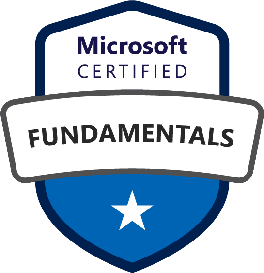
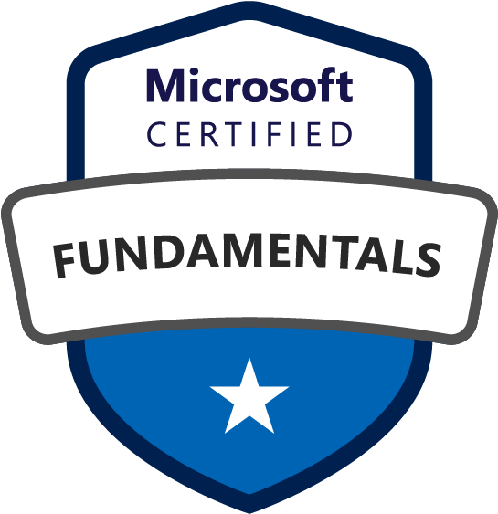
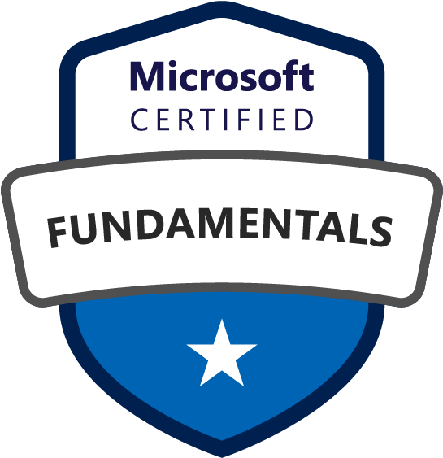

Tools & Certifications
 


IT Support Technician | Cybersecurity Enthusiast | Cloud Learner
I'm a proactive and experienced IT Support Technician with 4 years of experience in IT support, software development, and cybersecurity. Based in North Parramatta, Australia, I specialize in Office 365, Active Directory, Teams, Windows 10/11, Linux, AWS, and device management. I'm passionate about keeping systems secure and delivering high-quality tech support to users.
Aug 2024 – Present | Pyrmont, Australia
Feb 2024 – Aug 2024 | Brookvale, Australia
Jul 2023 – Sep 2023 | Ultimo, Australia
Mar 2022 – Jul 2023 | Parramatta, Australia
Jun 2019 – Dec 2021 | Kathmandu, Nepal

Email: anuzshakya1995@gmail.com
Phone: 0420 717 874
LinkedIn: linkedin.com/in/anuj-shakya